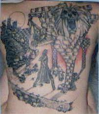
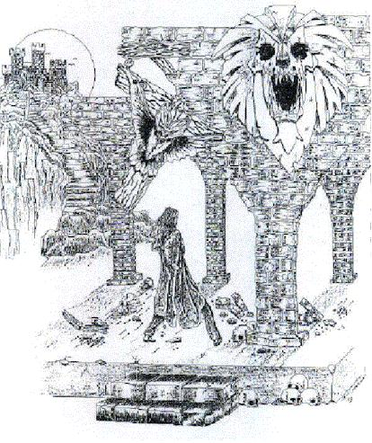

For your reference, that is a bat nailed to the cross, the man is a medieval assassin character from a book series (mine) that I've recently published part of...
-Genesis Awry
Last update: Sunday, October 07, 2001 16:52